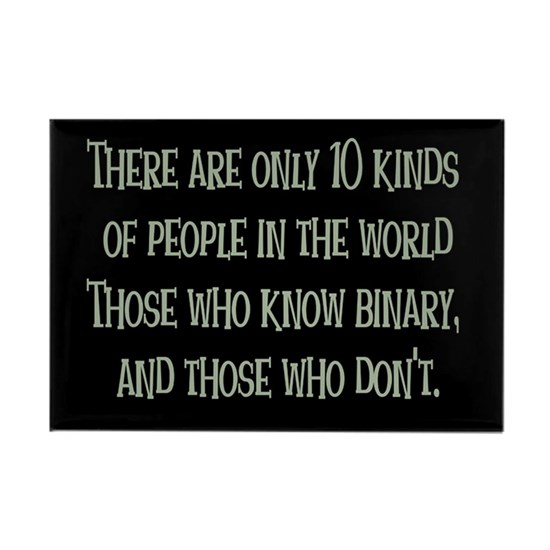

El sistema decimal, con el que estamos familiarizados desde muy pequeños para contar y realizar operaciones, no es sino uno (muy práctico y conveniente) de entre infinitos sistemas numéricos posicionales. Todos ellos sirven para expresar cantidades. En esta sección formalizaremos la idea de estos sistemas, y la especializaremos a casos prácticos que son relevantes para la lógica digital.
Un sistema numérico posicional de base $B \in \mathbb{Z}^+$ consiste en un conjunto $C_B: \{C_0,\ldots,C_{B-1}\}$ de $B$ cifras o símbolos con valor $C_i = i$, que se utilizan concatenadas para representar una cantidad $x$ en base $B$:
$$x_B = (c_{n-1}c_n \ldots c_1c_0)_B, \, c_i \in C_B$$según la siguiente regla:
$$x_B = (c_{n-1}c_n \ldots c_1c_0)_B = \sum_{i=0}^{n-1}B^ic_i$$El caso al que estamos habituados es el de $B=10$, el sistema decimal. La base del sistema es 10, y las cifras son $C_{10}:\{0,1,2,3,4,5,6,7,8,9\}$, con el valor que siempre asociamos a cada una de esas cifras. Así, por ejemplo, si $x_{10}=(3146)_{10}$, sabemos que $x$ vale 3146 porque:
$$3146_{10} = (3146)_{10} = \sum_{i=0}^{3}{10}^ic_i = {10}^0 \cdot 6 + {10}^1 \cdot 4 + {10}^2 \cdot 1 + {10}^3 \cdot 3 = 6 + 40 + 100 + 3000$$Como el sistema decimal es nuestro sistema de uso habitual, para simplificarnos la escritura de cantidades solemos dejar sin indicar la base, es decir que asumimos que $x = x_{10}$.
¿Cuánto vale el número $(10110101)_2$? Primero que nada, reconocemos que la base es $B=2$ y decimos que $C_2:\{0,1\}$, con los valores $0$ y $1$, respectivamente. Con esta información sabemos que:
$$(10110101)_2 = 2^0 \cdot 1 + 2^1 \cdot 0 + 2^2 \cdot 1 +2^3 \cdot 0 + 2^4 \cdot 1 + 2^5 \cdot 1 + 2^6 \cdot 0 + 2^7 \cdot 1 = 1+4+16+32+128=181$$Un ejemplo divertido es
$$ (31)_8 = 8^0 \cdot 1 + 8^1 \cdot 3 = 1 + 24 = 25 = (25)_{10} $$Si a la base $ B=8 $ la llamamos octal (abreviada OCT) y abreviamos la base decimal con DEC, el resultado anterior dice que 31 OCT es 25 DEC, ¿la Navidad y Halloween coinciden? (broma nerd).

Otros ejemplos:
$$\begin{align} (909)_{16} &= {16}^0 \cdot 9 + {16}^1 \cdot 0 + {16}^2 \cdot 9 = 2313 \\ (231)_{5} &= 5^0 \cdot 1 + 5^1 \cdot 3 + 5^2 \cdot 2 = 66\\ (666)_{20} &= {20}^0 \cdot 6 + {20}^1 \cdot 6 + {20}^2 \cdot 6 = 2526\end{align}$$Salta aquí una pregunta ¿cuáles son las 16 cifras de la base $B=16$ (hexadecimal), o las 20 cifras de la base $B=20$ (vigesimal)? En los ejemplos usamos cifras cuyo valor "a la vista" reconocemos sin problema del $0$ al $9$, pero tendríamos que detenernos a considerar las demás cifras. En el caso hexadecimal, $C_{16}:\{0,1,2,3,4,5,6,7,8,9,A,B,C,D,E,F\}$, con los valores faltantes siendo $A=10,B=11,C=12,D=13,E=14,F=15$. De modo que ¿cuánto vale la cantidad $(BEBE)_{16}$? Veamos:
$$ (BEBE)_{16} = {16}^0 \cdot 14 + {16}^1 \cdot 11 + {16}^2 \cdot 14 + {16}^3 \cdot 11 = 48830$$import random
import ipywidgets as widgets
from IPython.display import display, Latex, Markdown
def ejemplo(b):
out.clear_output(wait=True)
valor = random.randrange(1,10000)
val = valor
base = 0
while val > 1:
base = max(base,val%10)
val = val//10
base = random.randrange(base+1,base+10)
cantidad = int(str(valor),base)
#latexstr = '$({0})_'.format(valor) + '{' + '{0}'.format(base) + '} = ' + '{0}$'.format(int(str(valor),base))
latexstr = '$\LaTeX$'
with out:
display(Markdown(latexstr))
btn = widgets.Button(
description='Genera ejemplo:',
disabled=False,
button_style='info', # 'success', 'info', 'warning', 'danger' or ''
tooltip='Da click para generar un nuevo ejemplo',
icon='')
out = widgets.Output()
#display(widgets.HBox([btn,out]));
display(btn,out);
with out:
display(Latex('$(number)_{base} = value$'))
btn.on_click(ejemplo);
(pendiente)
(pendiente)